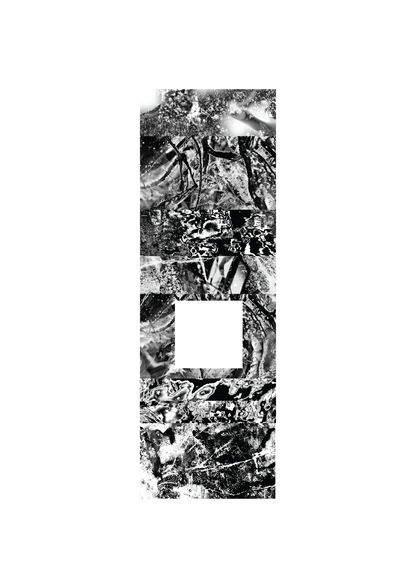

←back to editions
contributors of the 2nd edition
Confusion

![the confusion of tongues. twice the green currents. the flatness overflows. a glimpse of fucking life, emanates in the desert. for you were once a body. now you've become a halfpile of signifiers withering in a dumpster at the ruins of time. first there were letters. 23 ineffective letters. mutual agreement of permutations. and then there were words. 193 limited words. brutal arrangment of instructions. thus the lionserpent was created. furicously incised reshaping of language. the viper galloping figurehead taming each different. by archon command: holiest among the holy names of the author. the fundemental problem of the Indivisible Number is solved through the Attributions of Flows. one word is selected and renamed the Tower, and so the world is reduced to the theatre of doubles. this is how, by common root, all words lead to the desert.](../../submitted/2/misc/confusion2.png)